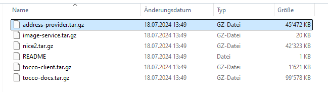

Für iffp mussten schon einigemal die IP-Zugriffe während
Prüfungen herausgesucht werden.
Pege hat diese in BS-12585 zusammengefasst.
Am sichersten ist es wohl, einen DB-Dump zu erstellen
und dann lokal eine neue DB zu erstellen.
Dort können dann das DB-File + db_history file in die
erstellte DB gemerged werden, so dass beide daten drin sind.
- Als erstes müssen db-dump und history-dump geholt
werden und und aus diese beide in eine DB restored werden:
Create one new DB
- Auf postgres user switchen sudo -i -u postgres
- Im postgres user ~ Verzeichnis ein output.csv erstellen und chmod 777 output.csv
- Abfrage für einen spezifischen User:
Adjust the Username and the Time first !
COPY (SELECT
h.username AS user,
h.insertion_time AS time,
h.ip_address AS "IP",
h.entity_key AS "history ID",
h.operation,
si.label AS exam
FROM
nice_history AS h
LEFT OUTER JOIN nice_survey_question_answer AS sqa ON h.entity_key::bigint = sqa.pk
LEFT OUTER JOIN nice_survey_user_intrusion AS sui ON sqa.fk_user_intrusion = sui.pk
LEFT OUTER JOIN nice_survey_intrusion AS si ON sui.fk_intrusion = si.pk
WHERE
h.insertion_time BETWEEN '2024-09-10' AND '2024-09-11'
AND h.entity_model = 'Survey_question_answer'
AND h.username = '${USERMANE}@${WHATEVER}.com'
) TO '~/output2.csv' CSV HEADER;
- Generelle Abfrage über alle User:
\copy (
with history_selected as (
select
h.username,
h.ip_address,
h.insertion_time,
si.pk as exam_pk,
si.label as exam_label
from nice_history as h
left outer join nice_survey_question_answer as sqa on h.entity_key::bigint = sqa.pk
left outer join nice_survey_user_intrusion as sui on sqa.fk_user_intrusion = sui.pk
left outer join nice_survey_intrusion as si on sui.fk_intrusion = si.pk
where
insertion_time between '2024-11-04' and '2024-11-07'
and entity_model = 'Survey_question_answer'
) select
s.username as user,
s.ip_address as "IP",
(select min("inner".insertion_time) from history_selected as "inner" where "inner".username = s.username and "inner".ip_address = s.ip_address and (("inner".exam_pk is null and s.exam_pk is null) or ("inner".exam_pk = s.exam_pk))) as "first use of IP",
(select max("inner".insertion_time) from history_selected as "inner" where "inner".username = s.username and "inner".ip_address = s.ip_address and (("inner".exam_pk is null and s.exam_pk is null) or ("inner".exam_pk = s.exam_pk))) as "last use of IP",
case when s.exam_label is not null then s.exam_label else '' end as exam
from
history_selected as s
group by s.username, s.ip_address, s.exam_pk, s.exam_label
order by 1, 2
) TO '~/output.csv' WITH CSV HEADER;
akad
AKAD
Aufbereitung-Datenträgers-Escrow
Alle x-jahre, verlangt Akad Daten, um das ERP-Selber zu betreiben
falls wir von heute auf morgen konkurs gehen würden (lol).
Das ganze ist eher eine Formalität, da dies ziemlich sicher eh nicht
klappen würde. Dennoch stellen wir Ihnen die Daten auf einem
USB-Stick zusammen.
Folgendes wir dabei inkludiert:
